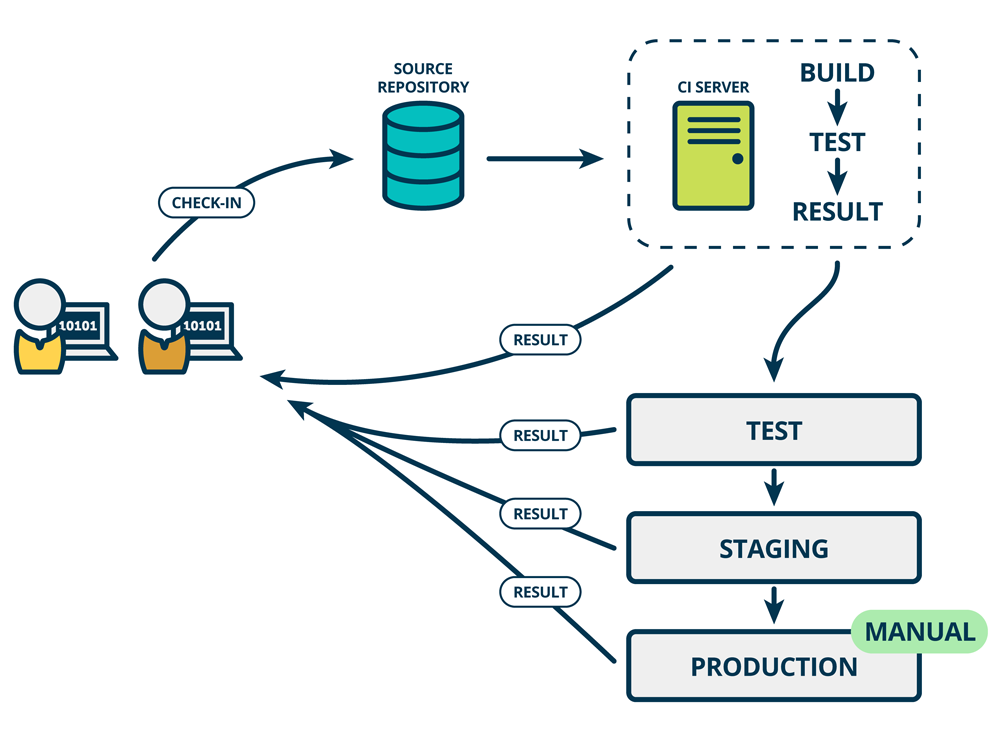

Automatyzacja stosowana dla programist贸w
Artur Kasperek
O mnie
- programista webowy JS
- czonek teamu tworzcego 'Dzieje Khorinis'
- wsp贸tw贸rca kompilatora Daedalus do gry Gothic
- pasjonat automatyzacji
- + + 革 = ワ
Kiedy to byo ...
- wymagania user贸w mao zmienne
- wzgldnie niewielka moc komputer贸w
- komputery używane g贸wnie w korpo
- internet dopiero powstaje, co implikuje, że ...
- ... outsourcing IT maopopularny
- ... praca zdalna trudna w realizacji
Dzi

- mamy szybki internet
- mamy mocne komputery
- komputer jest dostpny dla każdego
- spdzamy przed nim czsto wicej niż poow dnia, co powoduje, że ...
- ... zapotrzebowanie na software jest ogromne
- ... zapotrzebowanie na programist贸w jest ogromne
- ... ludzie oczekaj cigych zmian w softwarze
Co daje automatyzacja proces贸w IT ?
- specjalista nie traci czasu na rutynowych zadaniach
- mniejsze prawdopodbiestwo popenienia bdu
- możliwo wprowadzenia nowoczosnego workflow dla developer贸w
Przykady rzeczy kt贸re można zautomatyzowa
- backup bazy danych
- synchronizacja danych midzy rodowiskiem produkcyjnym a testowym
- budowanie aplikacji i wysyanie na serwer produkcyjny
- audyt wydajnociowy aplikacji
- odpalanie test贸w przed mergowaniem kodu
Co to jest Continues Integration (CI)?

Przykad CI

Jenkins - popularny niegdy serwer CI (gdzieniegdzie nadal )

GitHub Actions, CircleCI - nowsze CI, trigerrowane tylko przez eventy na GitHubie

Co to jest Continues Delivery ?
CD w kilku słowach
"Cige dostarczanie to praktyka programistyczna, gdzie oprogramowanie jest budowane w taki spos贸b, że może ono zosta opublikowane na rodowisku produkcyjnym w dowolnej chwili." - Martin FowlerJenkins, Github Action, CircleCI - suż też do CD
Jenkins - gdzie lepiej si nada ?